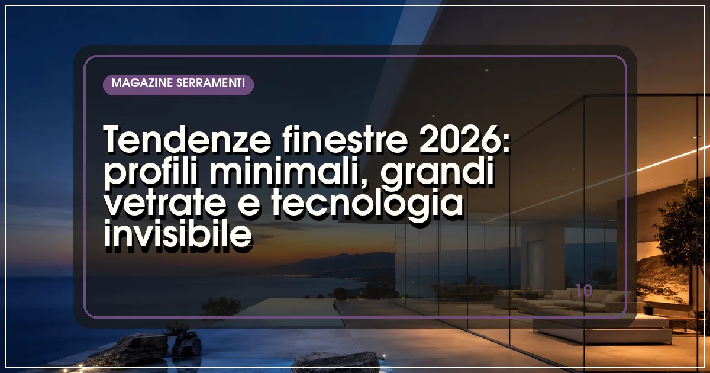

Profili visivamente ridotti, grandi superfici trasparenti, finiture coordinate e componenti poco evidenti sono temi ricorrenti nelle proposte di design delle finestre. Non costituiscono però una soluzione unica per tutte le abitazioni e non bastano a stabilire la qualità di un serramento. Un'immagine di catalogo può suggerire un effetto estetico, ma la scelta richiede di capire come quell'effetto venga ottenuto nella propria apertura e quali conseguenze abbia sull'uso quotidiano.
Questa guida alle tendenze delle finestre nel 2026 è una lettura progettuale delle soluzioni, non una classifica basata su quote di mercato o un sondaggio sui prodotti più venduti. Propone domande, disegni da richiedere e controlli per confrontare design e funzionalità. L'obiettivo è trasformare parole come minimale, panoramico o invisibile in caratteristiche riconoscibili, senza attribuire a una finitura o a una linea sottile prestazioni che devono essere documentate separatamente.
Tradurre l'immagine di riferimento in una richiesta concreta
Raccogli poche immagini e scrivi che cosa ti interessa in ciascuna. Potrebbe essere la proporzione fra vetro e telaio, il colore interno, il passaggio verso il terrazzo o l'assenza di una maniglia evidente. Questa descrizione evita di chiedere genericamente la stessa finestra di una fotografia. La scena rappresentata potrebbe infatti utilizzare dimensioni, materiali o modalità di posa che non corrispondono a quelle del tuo edificio.
Associa ogni immagine a un'apertura reale della casa. Indica ambiente, dimensioni indicative, ostacoli e modalità di utilizzo. Una soluzione apprezzata su una grande vetrata fissa può produrre un effetto diverso su un elemento piccolo e apribile. Chiedi al progettista o al fornitore di spiegare quali parti del riferimento siano riproducibili e quali dipendano da condizioni non presenti nell'abitazione. Conserva questa distinzione durante il confronto fra le offerte.
Stabilisci anche ciò che non vuoi sacrificare. Pulizia accessibile, apertura comoda, uso degli oscuranti e spazio di passaggio possono essere prioritari rispetto all'effetto visivo. Le preferenze estetiche rimangono importanti, ma devono essere discusse insieme a questi requisiti. Una lista breve di condizioni indispensabili rende più semplice valutare varianti interessanti senza cambiare inconsapevolmente l'obiettivo del progetto a ogni nuovo campione mostrato in esposizione.
Valutare i profili sottili attraverso un disegno quotato
Per capire l'effetto di un profilo, chiedi il disegno dell'elemento proposto. Devono essere riconoscibili telaio, anta, eventuale nodo centrale e porzione trasparente. La larghezza di una sola sezione non descrive sempre ciò che vedrai nella finestra completa. Un'immagine ravvicinata può mettere in evidenza un componente favorevole e lasciare fuori altri ingombri che incidono sulla percezione complessiva dell'apertura.
Confronta i disegni sulla stessa dimensione e con la stessa tipologia di apertura. Una parte fissa, un'anta e uno scorrevole non hanno necessariamente la stessa geometria. Se un fornitore mostra un elemento diverso, chiedi la rappresentazione della configurazione effettivamente prevista. Il confronto diventa più utile quando rende visibili le differenze e non soltanto quando ripete la definizione minimale usata nel catalogo del prodotto.
Chiedi inoltre quali verifiche sostengano la configurazione scelta. Dimensioni, vetro, ferramenta e sistema del profilo devono essere compatibili secondo le indicazioni del prodotto e del progetto. Il design non consente di dedurre automaticamente prestazioni termiche, acustiche o di tenuta. Per confrontare materiali e sistemi puoi partire dalla guida ai produttori di serramenti in alluminio, verificando poi le caratteristiche specifiche della proposta ricevuta senza usare l'elenco come certificazione del singolo elemento.
Grandi vetrate: distinguere superficie visibile e apertura utile
Una grande superficie trasparente può contenere parti fisse e parti mobili. Sul disegno, evidenzia quali si aprano e quale passaggio rimanga disponibile durante l'uso. Il dato complessivo della vetrata non coincide necessariamente con la luce di passaggio. Questa distinzione è particolarmente utile quando l'obiettivo è collegare soggiorno e terrazzo, spostare oggetti o organizzare l'accesso a uno spazio esterno frequentato ogni giorno.
Simula il percorso delle persone e l'arredo vicino all'apertura. Una tenda, un tavolo o un mobile possono modificare la comodità di una soluzione che appare semplice in una fotografia. Chiedi una dimostrazione del movimento dell'anta e della maniglia, valutando come avvenga con gli spazi effettivamente disponibili. Non trasferire automaticamente al prodotto ordinato la sensazione provata su un campione di dimensioni o configurazione diverse.
Per confrontare i sistemi, prepara una scheda che distingua geometria, passaggio, uso, pulizia e manutenzione. Se sono previste più varianti, mantienile separate. La guida agli scorrevoli in vetro può aiutare a formulare le domande, ma la decisione deve restare collegata all'elemento specifico. Chiedi anche come verranno raggiunte e pulite le superfici, evitando che una parte non accessibile diventi un problema scoperto soltanto a installazione conclusa.
Soglie, pavimenti e continuità fra interno ed esterno
L'effetto di continuità dipende dal rapporto fra serramento, pavimento interno e spazio esterno. Non si ottiene scegliendo soltanto una soglia descritta come ribassata. Chiedi un dettaglio del nodo e fai chiarire come verranno affrontate quote, raccordi e condizioni dell'edificio. Chi progetta il collegamento deve conoscere il contesto, comprese le lavorazioni che non riguardano direttamente la fornitura della finestra.
Nel confronto fra proposte, individua chi realizzi ciascun passaggio. Rimozioni, supporti, ripristini e finiture possono coinvolgere soggetti diversi. Se queste attività rimangono implicite, il prezzo del serramento sembra descrivere un risultato completo che in realtà richiede altri interventi. La richiesta dovrebbe quindi indicare non soltanto l'effetto desiderato, ma anche quali elaborati e verifiche siano necessari per valutare se sia realizzabile nel caso specifico.
Usa fotografie e disegni per rendere visibili le differenze fra situazione attuale e soluzione proposta. Non trattare una rappresentazione commerciale come un dettaglio esecutivo. Se alcuni aspetti devono ancora essere progettati, mantienili come punti aperti prima della conferma. L'obiettivo del confronto è arrivare a una decisione comprensibile, non ottenere una promessa di continuità perfetta senza aver discusso i collegamenti che la rendono possibile.
Colori e finiture: confrontare campioni identificati
Una finitura scura o materica va valutata nelle condizioni in cui sarà osservata. Luce naturale, superfici vicine e orientamento possono cambiare la percezione rispetto a un campione visto in esposizione. Chiedi che ciascun campione abbia un riferimento riconoscibile e annota quale sia stato scelto. Il nome commerciale del colore, da solo, può non chiarire texture, grado di brillantezza o differenze fra interno ed esterno.
Se la finestra comprende materiali o componenti diversi, chiedi come vengano coordinati visivamente. Maniglie, cerniere, coperture e oscuranti possono utilizzare finiture con caratteristiche differenti. Non presumere che una denominazione simile garantisca un aspetto identico. Per un risultato coordinato è utile controllare insieme i componenti realmente previsti, chiarendo eventuali differenze accettate prima che la scelta venga trasferita all'ordine e alla produzione.
Le condizioni di esposizione devono essere discusse anche dal punto di vista dell'uso e della manutenzione. Chiedi le indicazioni pertinenti al sistema scelto e alla destinazione del prodotto. Evita giudizi universali secondo cui un colore sarebbe sempre adatto o sempre problematico. Il confronto deve riguardare la configurazione proposta, con le istruzioni e i limiti dichiarati dal produttore, anziché ridursi al solo gusto personale o a una fotografia particolarmente convincente.
Ferramenta poco visibile e componenti integrati
La ferramenta a scomparsa può contribuire all'effetto estetico, ma deve rimanere comprensibile il modo in cui la finestra viene utilizzata, regolata e mantenuta. Chiedi una dimostrazione dell'apertura e delle operazioni previste dalle istruzioni. Una parte meno visibile non è necessariamente una parte che non richieda attenzione. Valuta anche la disponibilità di assistenza e il modo in cui il componente verrà identificato in caso di necessità.
Per i sistemi con sensori o comandi, distingui le funzioni integrate nel prodotto da quelle che dipendono da altri dispositivi o servizi. Chiedi chi configuri il sistema, quali informazioni utilizzi e come funzioni quando una connessione o un'alimentazione non sia disponibile. L'espressione finestra smart non descrive da sola questi aspetti. La guida alle finestre e alla domotica è un punto di partenza per organizzare il confronto.
Verifica che le funzioni proposte siano utili alle persone che useranno l'abitazione. Un comando aggiuntivo può avere senso se risolve un'esigenza precisa, ma può anche introdurre un passaggio che nessuno desidera gestire. Chiedi che la dimostrazione riproduca un uso quotidiano e non soltanto una sequenza preparata. Mantieni riconoscibili istruzioni, modalità manuali e riferimenti dell'assistenza, senza attribuire alla tecnologia una comodità automatica per ogni situazione.
Mettere design, comfort e prestazioni nella stessa scheda
L'aspetto della finestra e le prestazioni richieste devono essere valutati insieme, mantenendo però distinti i dati. Un profilo sottile non dimostra da solo un migliore isolamento; una vetrata ampia non descrive il comportamento estivo dell'ambiente. Chiedi quali documenti sostengano le caratteristiche rilevanti per il progetto e a quale configurazione si riferiscano. Se il dato riguarda un elemento diverso, fai spiegare come debba essere interpretato.
Per la parte trasparente, tieni separati comportamento termico, energia solare e luce visibile. La documentazione AGC sulle prestazioni del vetro offre un accesso alle informazioni dei prodotti, da ricondurre alla composizione proposta. Non usare una percentuale isolata per descrivere il comfort dell'intera stanza. Esposizione, schermature, edificio e modalità di utilizzo devono essere discussi con i soggetti incaricati della valutazione tecnica.
Considera anche ciò che accade vicino all'apertura: tende, arredo, oscuranti, cassonetti e raccordi con la parete possono incidere sull'effetto finale. Una scheda utile non aggiunge indiscriminatamente componenti, ma mostra quali elementi siano stati considerati e quali rimangano da chiarire. Questo rende il progetto più leggibile e aiuta a distinguere una scelta consapevole da una configurazione ordinata soltanto perché visivamente simile al riferimento iniziale.
| Tema | Documento o prova da chiedere | Punto da chiarire |
|---|---|---|
| Profilo visibile | Disegno quotato dell'elemento | Quali parti si vedranno realmente? |
| Grande vetrata | Schema di parti fisse e mobili | Qual è il passaggio utile? |
| Finitura | Campione identificato | Cosa cambia tra interno ed esterno? |
| Funzioni integrate | Dimostrazione e istruzioni | Come avvengono uso e assistenza? |
| Prestazioni | Documenti della configurazione | Il dato riguarda il prodotto offerto? |
Confrontare offerte e varianti senza perdere il progetto
Organizza l'offerta per apertura, conservando un identificativo coerente con i disegni. Riporta sistema, finiture, vetro, apertura, accessori e lavorazioni incluse. Se una proposta presenta varianti, chiedi una descrizione completa di ciascuna anziché un elenco di sovrapprezzi scollegati. In questo modo puoi capire quale differenza sia estetica, quale riguardi l'uso e quale incida sul perimetro dell'intervento necessario.
Non confrontare come equivalenti una soluzione completa e una che esclude i raccordi o le finiture necessarie al risultato desiderato. Chiedi chi si occupi delle attività collegate e come vengano coordinate. Il prezzo della sola finestra non descrive automaticamente il costo dell'intero progetto. Quando un dettaglio è ancora in valutazione, mantienilo riconoscibile invece di lasciarlo scomparire nella versione finale del preventivo come un'ipotesi non discussa.
Conserva la storia delle modifiche importanti. Se cambi una maniglia, un colore o una partizione, verifica che la nuova scelta compaia nella conferma e nei disegni utilizzati per produrre. Una comunicazione informale può essere utile per discutere, ma non dovrebbe lasciare due versioni apparentemente definitive. Chiedi un riepilogo coerente e riconoscibile, così la revisione estetica non genera differenze involontarie fra ciò che è stato scelto e ciò che viene consegnato.
Esempio illustrativo: trasformare un riferimento minimale in una scelta
Immagina di voler sostituire una portafinestra del soggiorno perché ti piace una fotografia con telaio poco evidente e pavimento continuo verso il terrazzo. Prima di chiedere un prezzo, descrivi che cosa vuoi ottenere: più superficie trasparente percepita, un passaggio comodo e una finitura coordinata all'arredo. L'esempio non rappresenta un lavoro reale: serve a distinguere l'obiettivo dalla riproduzione letterale di una scena commerciale.
Il fornitore presenta due sistemi con partizioni differenti. Sul disegno confronti parti fisse, movimento dell'anta, maniglia e passaggio utile. Il referente del progetto verifica poi il nodo con i pavimenti e le lavorazioni necessarie. Solo a questo punto puoi leggere le differenze economiche insieme ai risultati attesi, evitando di scegliere il sistema apparentemente più sottile senza sapere come verrà utilizzato e inserito nella situazione esistente.
La decisione finale può prevedere una soluzione diversa dall'immagine iniziale, ma più coerente con l'abitazione. Conserva la scheda e i riferimenti dei campioni insieme alla conferma d'ordine. Il design delle finestre diventa una scelta verificabile quando rende espliciti proporzioni, uso, dettagli e documenti: non quando concentra ogni qualità in un'etichetta come minimale o di tendenza. Questo metodo resta utilizzabile anche quando cambiano colori e collezioni proposte nei cataloghi.
Alla consegna, riprendi i riferimenti utilizzati nella scelta e verifica che i documenti permettano di riconoscere la configurazione ordinata. Segnala le differenze da chiarire prima di considerarle automaticamente varianti accettate: finitura, maniglia, partizione e accessori devono poter essere confrontati con quanto era stato confermato. Anche una scelta estetica apparentemente piccola può essere importante per chi abita la casa. Una raccolta ordinata dei riferimenti rende più semplice discuterla con il fornitore, mentre una cartella di fotografie prive di nome e data costringe a ricostruire il percorso. Conserva quindi campioni identificati o loro riferimenti, disegni e conferma nella stessa struttura, mantenendo distinguibili le versioni superate.
Domande frequenti
Un profilo più sottile è sempre migliore?
No. Va valutato nella configurazione della finestra, insieme a apertura, dimensioni, uso e prestazioni documentate. Chiedi un disegno dell'elemento proposto e confrontalo con alternative equivalenti. La misura di una sezione isolata non descrive sempre l'ingombro visibile del sistema completo.
Una grande vetrata offre sempre un grande passaggio?
Non necessariamente: la superficie può comprendere parti fisse e mobili con geometrie diverse. Sul disegno devono essere visibili movimento delle ante e passaggio effettivamente disponibile. Valuta anche arredo, tende e percorsi, perché una fotografia del prodotto non rappresenta da sola l'uso della stanza.
Come scelgo il colore senza equivoci?
Utilizza un campione identificato e controlla finitura interna, esterna e componenti accessori. Annota il riferimento nella conferma d'ordine e fai chiarire eventuali differenze fra materiali. Una denominazione commerciale simile non dimostra che maniglie, profili e oscuranti avranno esattamente lo stesso aspetto.